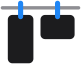
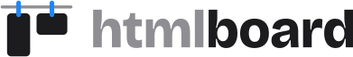
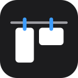
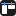

htmlboard logo · picked 2026-10-28 (the other options: design/logo-options.html)
Hanging row
The canvas’s rows: designs of every size hanging side by side, tops aligned, like sketches pegged to a line to look at together. The wordmark is Bricolage Grotesque 800, “html” soft and “board” strong. Every file below comes from design/tools/logo.py.






NOS Dourados · Designs · htmlboard×
NOS Dourados · Designs · htmlboard×
Files
- brand/logo-light.svg, brand/logo-dark.svg
- The logo (mark and wordmark), on light and on dark backgrounds: the README, docs, slides.
- brand/mark-light.svg, brand/mark-dark.svg
- The mark alone, where the name is already said.
- brand/icon.svg
- The app icon: the mark on the canvas’s dark tile.
- brand/favicon.svg, src/client/favicon.svg
- The tab icon, drawn on whole pixels for 16 px.
- src/client/logo.svg, src/client/mark.svg
- The explorer’s: the logo at the top of the list, the mark in its empty state.